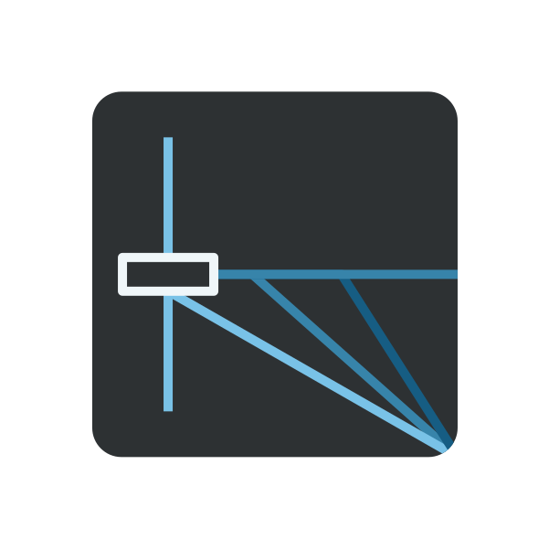
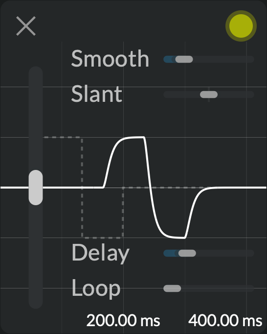
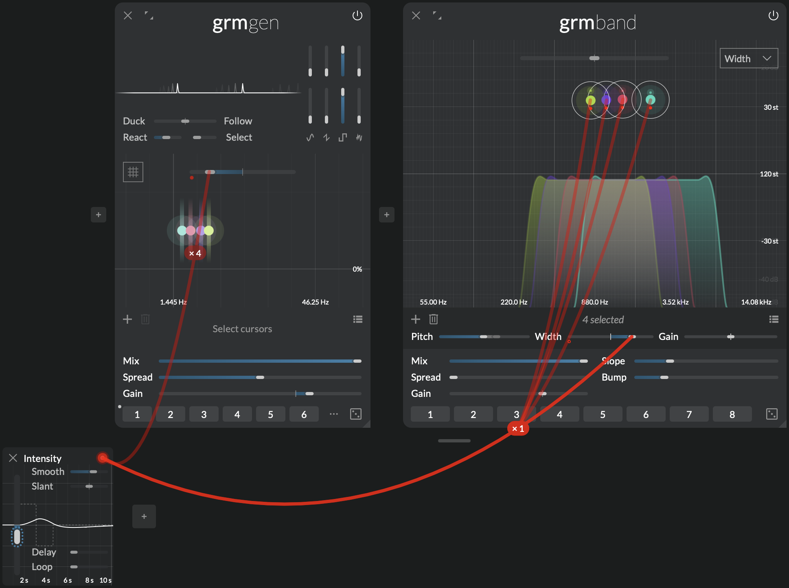
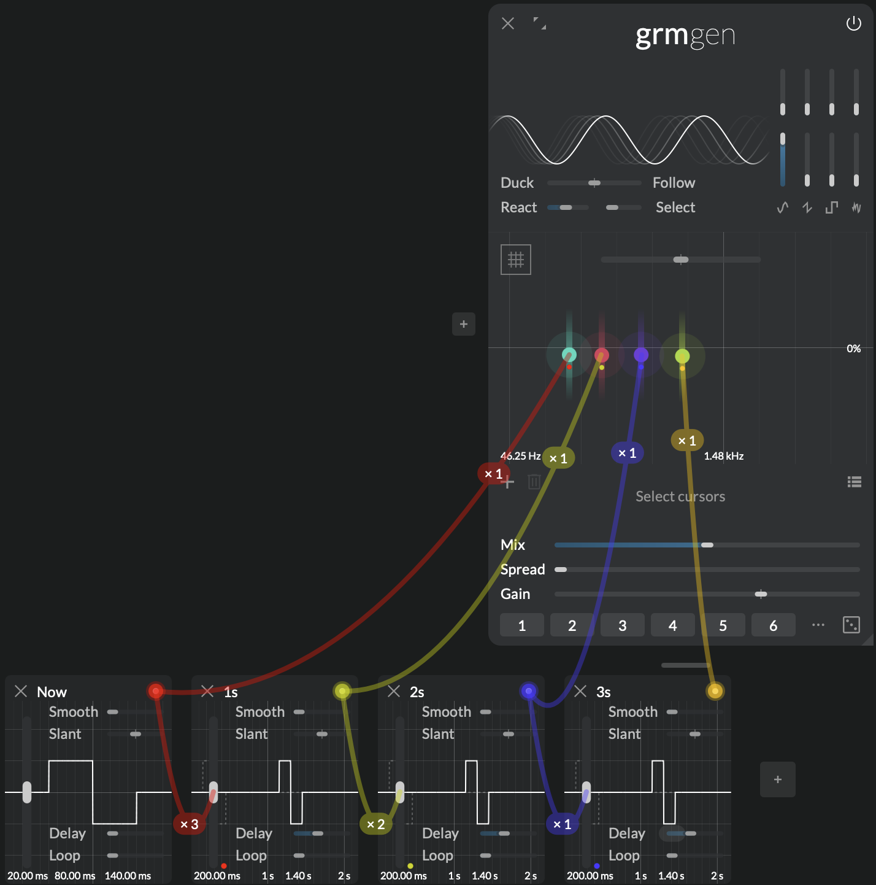
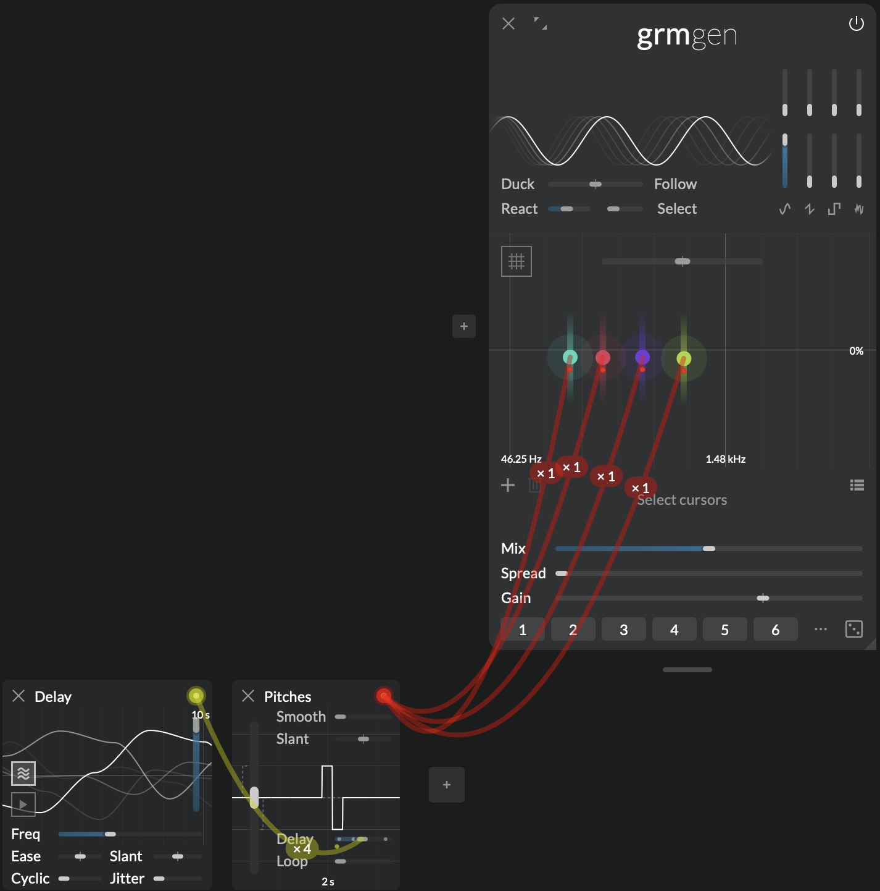
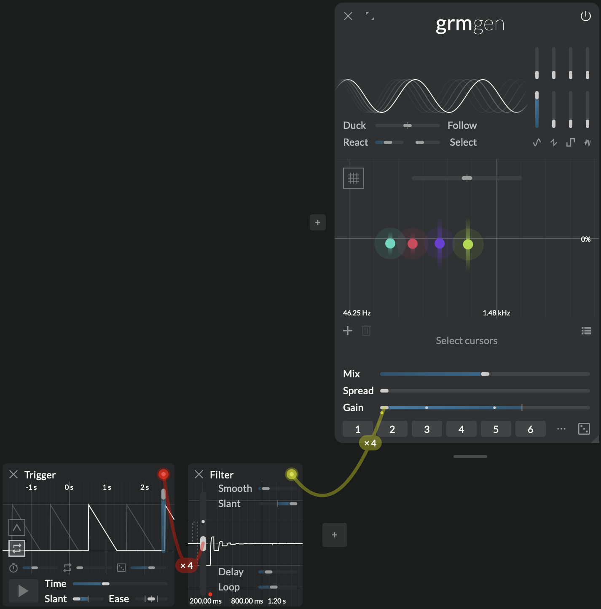

Patch tamer
 Control

One big slider; its position is the modulation. Connect it to several destinations and adjust their dosages to get the desired macro-controller. Make it the entry point to a complex patch, or the hands-on control in your live performance. Smoothen, delay or loop your movements for predictable gestural transformations. Control is the simple yet powerful tool to reach patch-mastery.
Context
Atelier's modules expose parameters to the user that are mostly technical in nature (Pitch, Window, Spread...). Often, controlling a patch in a specific perceptual or artistic way involves moving several controls at once, in various proportions; this is where Control comes into play. At its core, it is a single slider, Value: when moved up or down, all its destination parameters move up or down by as much, taking modulation range into account. Therefore, patch-programming a complex macro-control amounts to connecting a Control to several parameters and adjusting each connection's modulation range, and mapping it to e.g. a MIDI controller:
[Screenshot]
Note
Control is bipolar, meaning it moves equally above and below the destination parameter's set value. Therefore, to modulate across its full range of without clamping, the destination parameter must be centered and range set to 100%.
Furthermore, Control provides additional tools to filter and transform the movements of the Value slider:
- Smoothing makes the movements of Value smoother, applying a low-pass filter to it,
- Delaying introduces a delay between the movement of Value and that of the destination,
- Looping allows to partially or completely repeat previous movements, and acts like a delay feedback, not on audio but on modulation.
Keep in mind that like all parameters in Atelier, the Value slider can itself be modulated, and that this modulation itself is polyadic (see Modulations). Control can therefore be used as a filter for modulation signals, to smoothen, delay or loop them.
Controls
Every parameter has as many independently-modulatable instances as there are outgoing instances of this modulator (ie. the sum of all wires' instance number, see Modulation).
- Value: Main value of the Control; modulated destinations are displaced by this amount.
- Smoothing time: Amount of smoothing applied to the Value parameter, or time it takes for it to reach its set value.
- Slant: Difference of slew times between rises and falls. At 0%, the rise and fall times are identical; at -100%, rises are immediate, at +100%, falls are immediate.
- Delay: Lag between a movement of the input (the Value parameter) and the corresponding movement of its output (what it is connected to).
- Loop: How much of past movements of Value is layered on top of the current movement. The delay parameter sets the time of the loop. At 100%, it creates an infinite loop of length Delay containing the last movements of the Value parameter. At 50%, the current Value is added the value it had Delay seconds ago, creating a slowly-settling feedback loop.
Note
The content of the Loop buffer is not saved with the patch; upon relaunch, it will be initialized to 0.
Tips and tricks
Live controls

Connect Control to several destinations in a patch, adjusting the modulation range to taste so that movement of Value affects, say, the "intensity" of the sound. Assign Value to a MIDI potentiometer to play it in real time. Optionally, set Smooth to 10s; now you don't need your hand to make slow changes: brutally moving the potentiometer up will automate a gradual, 10s rise in intensity.
Delay chains

Instantiate a first Control; its Value will be your main point of entry. Instantiate 3 additional Control, each with Delay at 1s, and modulate each Value with the previous Control's output, creating a chain of 4 Control instances. Now connect each Control again to a separate destination (e.g. the Pitch from 4 Gen oscillators); each destination will follow the first Control's movements, with increasing lags.
Polyadic delays

Alternatively to the previous tip, a single Control might be enough to achieve a similar effect, thanks to the polyadicity of modulations. Modulate a few (say, 4) destination parameters with a Control; agitate its Delay parameter; this wire has 4 instances, so there are 4 independent agitation engines modulating Delay. Stop the agitation by disabling Running. Now each of the 4 destination parameter responds to the Control's Value with 4 different (randomly-chosen) delays.
Use it as a filter

Again, thanks to polyadic modulations, A Control can be used as a filter for modulations. Instead of connecting a modulator, say Peak, directly to some destination(s), connect Peak to the Value of a Control, and connect this Control to the final destinations. Now, play with Smoothing time, Slant, Delay and Loop to modify the shape of the signal generated by Peak. Note that Peak's output is still polyadic, ie. there are as many independent Peak generators as there are destinations.